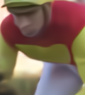
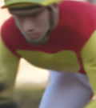
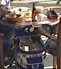
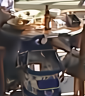

CANF-VC: Conditional Augmented Normalizing Flows for Video Compression
.png)


Note: The CANF-based motion coder $\{ F_\pi, F_\pi^{-1} \}$ follows the same design as the inter-frame coder, with $x_t, x_c$ replaced by $f_t, f_c$, respectively.
Fig. (a) depicts our CANF-based video compression system, abbreviated as CANF-VC. It includes two major components: (1) the CANF-based inter-frame coder $\{G_\pi, G_\pi^{-1}\}$ and (2) the CANF-based motion coder $\{F_\pi, F_\pi^{-1}\}$. The inter-frame coder encodes a video frame $x_t$ conditionally, given the motion -compensated frame $x_c$. It departs from the conventional residual coding by maximizing the conditional log-likelihood $p(x_t|x_c)$ with a onditional, multi-step ANF model. The motion coder shares a similar architecture to the inter-frame coder. It extends conditional coding to motion coding, in order to signal the flow map $f_t$, which characterizes the motion between $x_t$ and its reference frame $\hat{x}_{t-1}$. In our work, $f_t$ is estimated by PWC-Net. The compressed flow map $\hat{f}_t$ serves to warp the reference frame $\hat{x}_{t-1}$, with the warped result enhanced further by a motion compensation network to arrive at $x_c$. To formulate a condition for conditional motion coding, we introduce a flow extrapolation network to extrapolate a flow map $f_c$ from three previously decoded frames $\hat{x}_{t-1}, \hat{x}_{t-2}, \hat{x}_{t-3}$ and two decoded flow maps $\hat{f}_{t-1}, \hat{f}_{t-2}$. Note that we expand the condition of $p(x_t | \hat{x}_{\textless t})$ from previously decoded frames $\{\hat{x}_{\textless t}\}$ to include also previously decoded flows $\{\hat{f}_{\textless t}\}$.
The reconstruction quality on sequence selected from UVG, HEVC class B, and MCL-JCV dataset.
Note: In order to compare with DCVC fairly, we apply the same intra-frame coder to DCVC.
| Ground Truth | DCVC (ANFIC) | CANF-VC | DCVC-ssim (ANFIC) | CANF-VC-ssim |
|---|---|---|---|---|
|  |  |
 | ||
| PSNR-RGB: 33.84dB 0.0184 bpp |
PSNR-RGB: 34.50dB 0.0109 bpp |
MS-SSIM-RGB: 0.967 0.0336 bpp |
MS-SSIM-RGB: 0.966 0.0271 bpp |
| Ground Truth | DCVC (ANFIC) | CANF-VC | DCVC-ssim (ANFIC) | CANF-VC-ssim |
|---|---|---|---|---|
|  |  |
 |  |
 |
| PSNR-RGB: 27.71dB 0.0441 bpp |
PSNR-RGB: 29.00dB 0.0396 bpp |
MS-SSIM-RGB: 0.952 0.0425 bpp |
MS-SSIM-RGB: 0.955 0.0465 bpp |
| Ground Truth | DCVC (ANFIC) | CANF-VC | DCVC-ssim (ANFIC) | CANF-VC-ssim |
|---|---|---|---|---|
 |
||||
| PSNR-RGB: 32.68dB 0.0343 bpp |
PSNR-RGB: 33.26dB 0.0267 bpp |
MS-SSIM-RGB: 0.972 0.0506 bpp |
MS-SSIM-RGB: 0.970 0.0390 bpp |
{kind=link}
{kind=link}